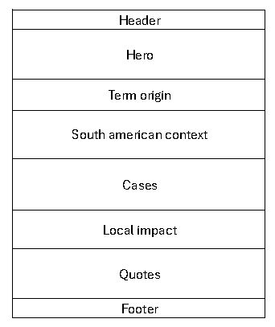
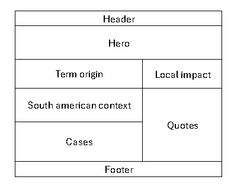

Site Name
Site Name: 322 Archive: Origins and Context
Optional Domain Availability: 322archive.gg
Description: I kept the name "322 Archive" because it combines "322"—the most famous numeric meme and competitive scandal in Dota 2 history—with "Archive", which signals that the site is an educational repository. "Origins and Context" was added because this version explains not only what happened, but why match-fixing kept appearing in the South American scene.
Site Purpose
The site explains where the term "322" comes from and how match-fixing became a recurring problem in the South American Dota 2 community. It combines the original 2013 incident, case studies of banned South American teams like Elite Wolves, and an analysis of the circumstances that push players toward these decisions, such as low salaries, unstable contracts, unregulated betting, and financial pressure.
Site Pages
- Home (index.html): origin of the term, South American context, and a preview of three main cases.
- Form page (form.html): lets visitors submit a testimony or suggest a case, followed by a confirmation page.
- Cases page (cases.html): a full catalog of match-fixing cases loaded from a JSON file, with the year, the sanction, and the circumstances behind each one, plus filters by year.
Scenarios
- Why does the Dota 2 community and Twitch chat constantly use the term "322" whenever a player makes a mistake, and what is the original story behind that number?
- What economic and institutional circumstances led South American players to accept match-fixing offers, and how did that situation differ from other regions?
- Which South American teams and players were permanently banned by Valve for match-fixing, and how did those bans impact the growth of esports in the region?
Color Schema
The site's color palette is directly inspired by the dark, dramatic aesthetic of Dota 2 and esports interfaces:
- Primary Background (#121212): A dark charcoal gray used for the main body background to give a gaming feel and reduce eye strain.
- Secondary Container (#1e1e1e): A dark gray used for section cards, headers, and content blocks to create contrast and structure.
- Accent Red (#af2b2b): Inspired by the iconic Dota 2 logo crimson red. Used for main headings (H1, H2), borders, and emphasis on bans/warnings.
- Accent Gold (#d4a359): Inspired by the Aegis gold color. Used for subheadings (H3), important dates, key terms, and links.
- Text Main (#e0e0e0): An off-white color used for all body text, paragraphs, and list items to ensure high legibility.
Typography
The site uses three distinct web fonts imported from Google Fonts to structure hierarchy and highlight quotes from the competitive scene:
- Heading Font — Montserrat (Bold / Extra-Bold 800): Used for main titles (H1, H2, H3). A strong, geometric sans-serif that delivers high visual impact suited for esports.
- Casual Text Font — Open Sans (Regular 400): Used for all standard body copy, paragraphs, scenario descriptions, and list items to guarantee clean legibility across devices.
-
Quote Font — Cinzel (Italic 600): Used specifically for player quotes, official Valve statements, and community testimonies (rendered inside
<blockquote>elements) to give them a dramatic and historical tone.
Wireframes
The following wireframes represent the proposed structural layout for the home page in both Mobile (Narrow) and Desktop (Wide) viewports:
Mobile View (Narrow Layout)

Desktop View (Wide Layout)
